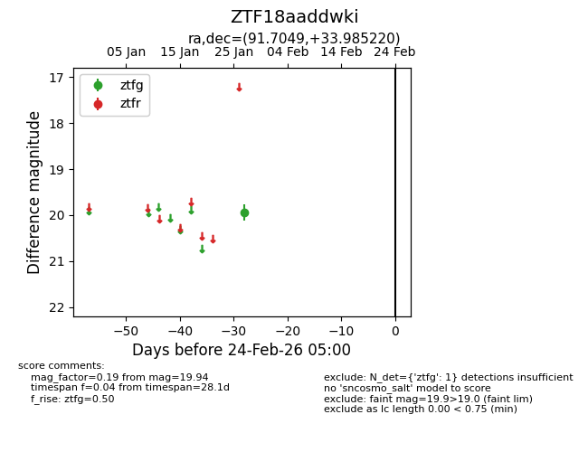
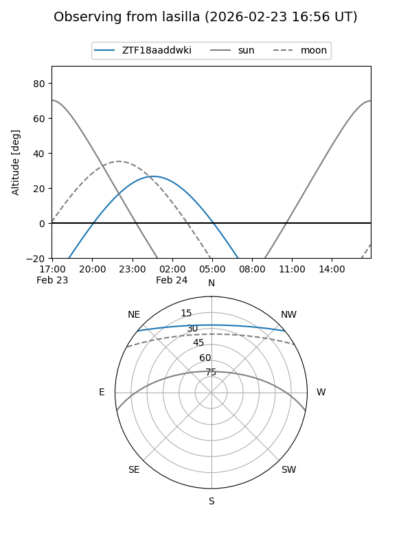
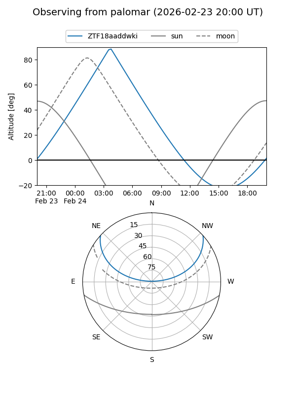

ZTF18aaddwki
Target ZTF18aaddwki at 2026-01-27 04:11
Aliases and brokers:
FINK: link
Lasair: link
ALeRCE: link
alt names
ZTF18aaddwki (ztf,fink_ztf)
Coordinates:
equatorial (ra, dec) = 91.7049,+33.98522
equatorial (HMS+DMS) = 06:06:49.19,+33:59:06.79
galactic (l, b) = (177.8848,+6.43767)
Flags:
Photometry:
last ztfg=19.94
1 ztfg detections
Lightcurve

Visibility


Additional plots